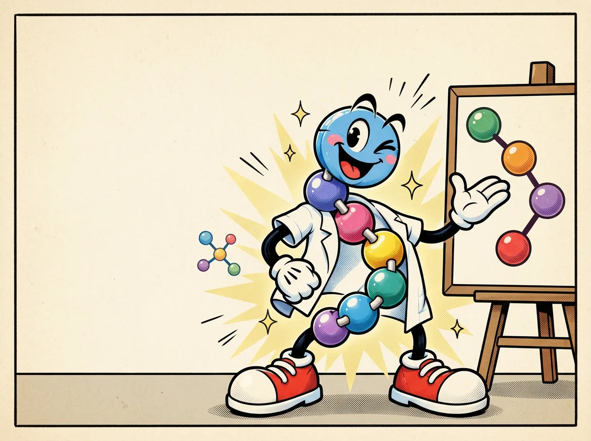
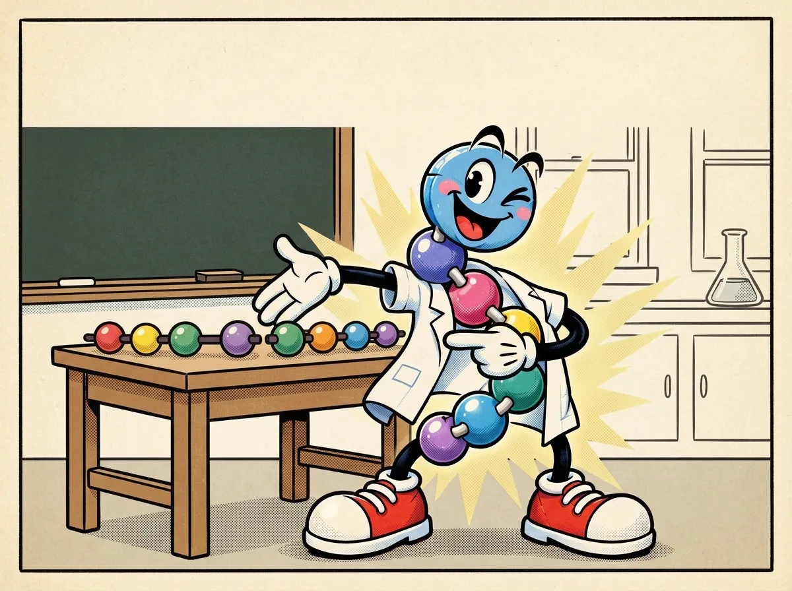
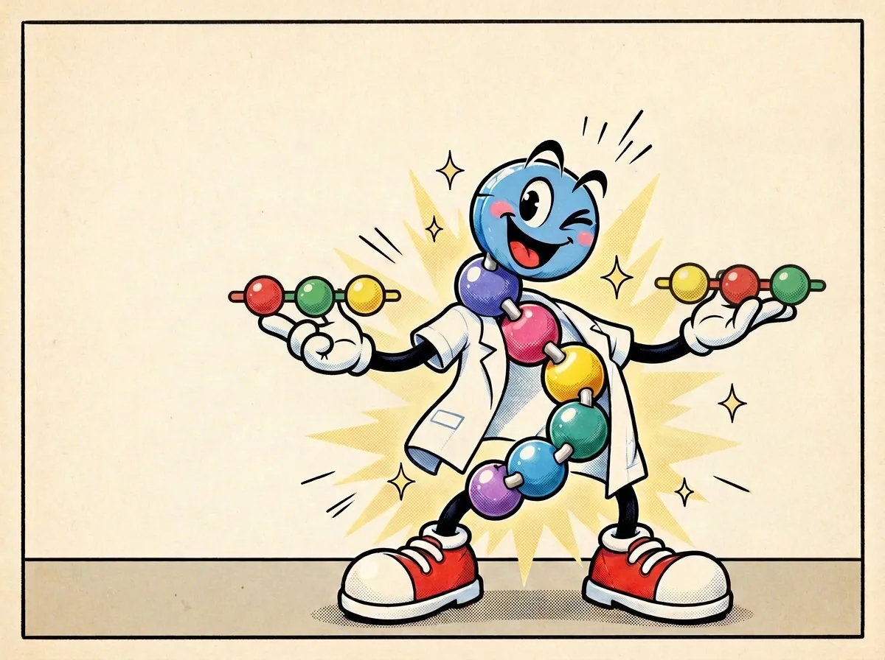

Chains with character
Identify amino acids, peptide bonds and sequence without mistaking a cartoon for a chemical structure.



What the comic means
The clean version
A peptide is a short chain of amino acids joined by peptide bonds. Peppy’s colored beads are a way to remember the chain, not a picture of its atoms. The order of beads is called its sequence.
One level deeper
A chain has a defined order from its amino (N) terminus toward its carboxyl (C) terminus. A peptide bond links neighboring amino-acid residues. Short chains are commonly called peptides; the exact peptide-versus-polypeptide size boundary varies by context. The same residue composition in another order is a different primary sequence.
Mechanism lens
Primary sequence constrains chemical behavior but is not a stand-alone activity prediction. Side-chain chemistry, stereochemistry, conformation, modifications, solution environment and the biological target all matter. The cartoon neither encodes peptide-bond geometry nor N/C-terminal chemistry, so use an actual molecular diagram for mechanistic analysis.
Beads aren't biology.
Peppy's sphere-and-peg body is not a molecular diagram. Amino-acid side chains differ chemically; peptide bonds are covalent amide links, not detachable connectors. Sequence can influence activity but does not guarantee a particular effect.
Check your understanding
If two chains contain the same three amino acids in a different order, are their sequences identical?
Reveal answer
No. Composition is the same; the ordered sequence is different. That alone does not tell us what either chain does in a cell.
Check the science
- NHGRI Talking Glossary — Peptide — Definition, peptide bonds and chain analogy
Sources support the biology; comic poses and colored beads are illustrative. Educational content is not medical advice.